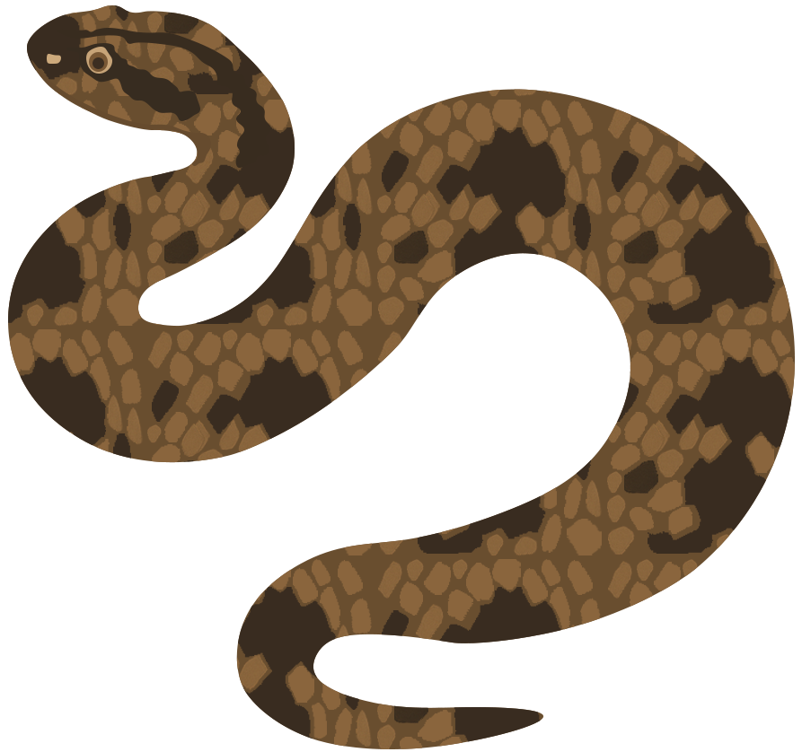

Степова гадюка Vipera ursinii
Отруйна
Червона книга України
Довжина: 45-55 см
Активність: Денна
Ареал: Степова зона України
Харчування: Комахи, ящірки, гризуни
Опис
Степова гадюка — невелика отруйна змія, що мешкає в степових районах України. Має характерне сіро-коричневе забарвлення з темною зигзагоподібною смугою вздовж спини. Це найменша з європейських гадюк.

Степова гадюка у природному середовищі
Особливості
- Найменша серед гадюк України
- Має вертикальні зіниці та трикутну голову
- Характерний зигзагоподібний візерунок на спині
- Кілевата луска, що створює шорстку поверхню
Спосіб життя
- Активна вдень, особливо вранці та ввечері
- Зимує в норах гризунів та природних укриттях
- Народжує живих малят (3-8 особин)
- Полює переважно на комах та дрібних ящірок
⚠️ Важлива інформація
Хоча степова гадюка отруйна, вона не агресивна і намагається уникати контакту з людиною. При зустрічі:
- Зберігайте спокій та повільно відступіть
- Не намагайтеся зловити або потурбувати змію
- При укусі негайно зверніться до лікаря
Охорона
Вид занесений до Червоної книги України. Основні загрози:
- Розорювання цілинних степів
- Випалювання трави
- Знищення людьми через страх
- Браконьєрство